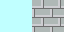
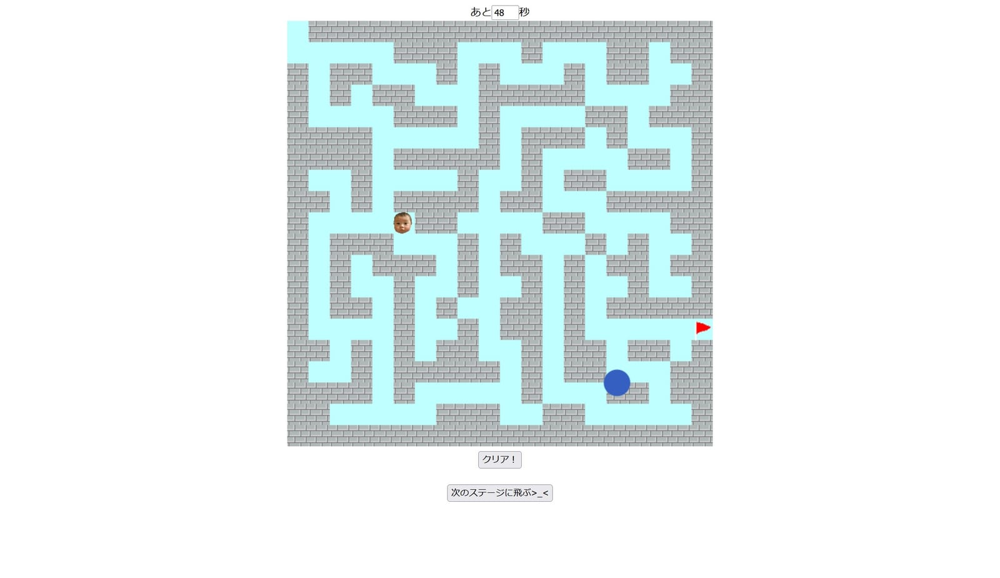
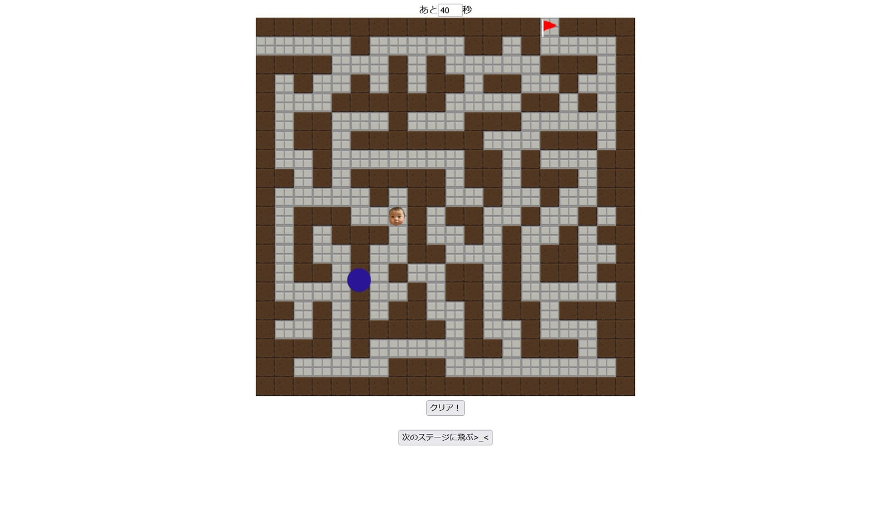
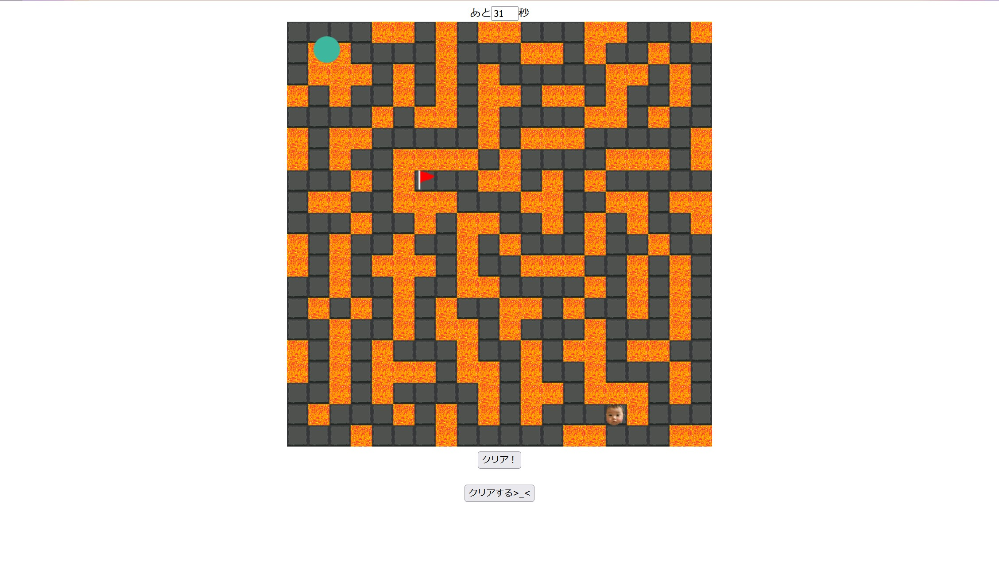
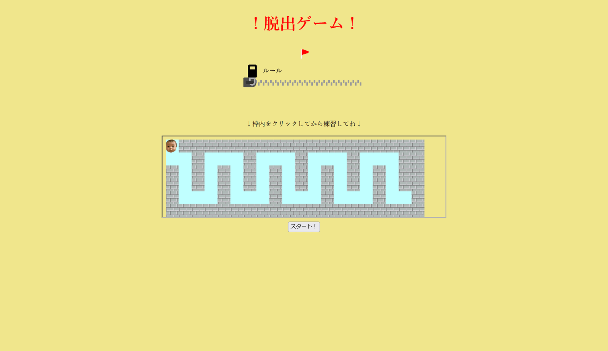
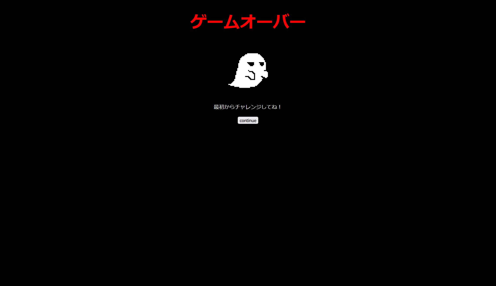
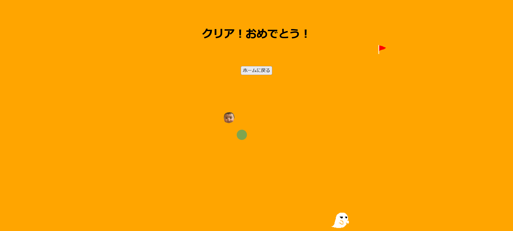

ゴールを目指せ!
AIを使わず、コードを1から書いた迷路ゲーム
▶ Play
※キーボード操作のため、スマホではプレイできません

01Overview — 「自分」をゴールさせるシンプルなゲーム
自分の顔アイコンを操作して、迷路のゴールを目指すシンプルなゲームです。 何度も楽しめるように少し難易度の高いゲームを制作し、簡単な操作ですぐに楽しめるようにしました。 当時はまだ生成AIを使ったコーディングが一般的でなかったこともあり、 迷路の当たり判定やタイマー、ステージ切り替えのロジックまですべて自分の手でコードを書いて実装しています。
Who気軽に遊べるミニゲームを探している人が
Why何度も繰り返し楽しむための
Howキーボード操作の迷路ゲーム
02Project Info
- ツール
- 製作形態
- 授業(基礎プログラミング2b)
- 製作時期
- 学部1年
- 製作期間
- 2カ月(2022.12〜2023.01)
- 人数
- 1人
- AI利用
- 不使用(フルスクラッチで実装)
03How to play — 遊び方
1キーボードの上下左右を使って移動する
2ゴールに辿り着いたら「クリア!」ボタンをクリック
3動き回るボールに当たる or 時間切れになるとゲームオーバー
全部で3ステージ。クリアできない時や、途中のステージに移動できるようにボタンも設置しています。
04Design — ステージごとのテーマ
各ステージにテーマを持たせてデザインしました。

ステージ1見やすさを重視
ステージ2
暗く、不穏な雰囲気
暗く、不穏な雰囲気
ステージ3
重厚感・激しさ
重厚感・激しさ



05Gallery — 画面いろいろ


